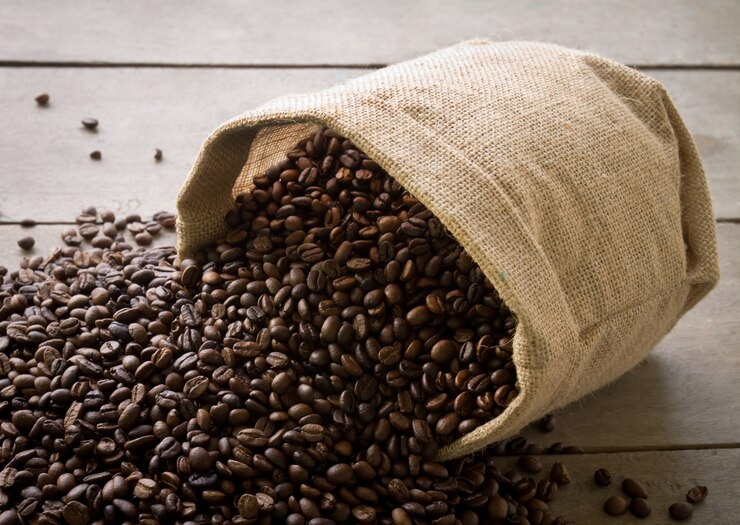

Kopi Organik Premium
Rasa Autentik dari Alam, 100% Alami

Kenapa Pilih Kopi Organik Premium?
Kopi Organik Premium dibuat dari biji kopi pilihan yang ditanam tanpa bahan kimia, memberikan rasa autentik dan lebih sehat untuk tubuh Anda.
Diproduksi secara berkelanjutan dan mendukung petani lokal di Indonesia.
Pesan Sekarang →
🌱 100% Organik
Tanpa pestisida & pupuk kimia, mendukung lingkungan yang lebih sehat.
☕ Rasa Autentik
Cita rasa khas Nusantara dengan aroma yang kuat dan nikmat.
📦 Kemasan Ramah Lingkungan
Kemasan biodegradable yang menjaga kualitas kopi tetap segar.
Temukan Lebih Banyak
Lihat juga FAQ,
Blog Kopi, atau
Ulasan Pelanggan.